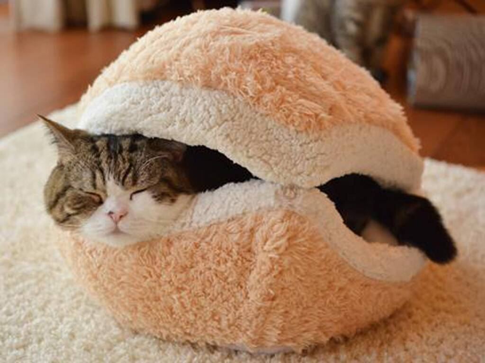
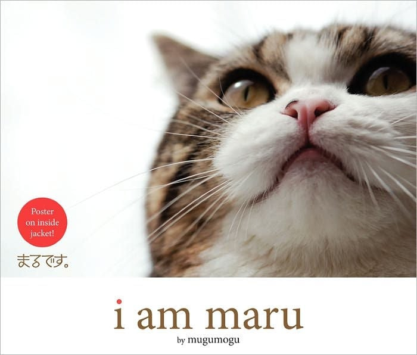

Maru (Japanese: round; circle) is a male Scottish Fold cat. He has become popular on both Japanese and international YouTube alike, because of his passion for getting into boxes of all sizes. Videos showing Maru had over 325 million views in September 2016, a Guinness World Record for a YouTube channel of a single animal.
On May 24th, 2007, Maru the Cat was born. A photo blog "I am Maru” was launched to curate photos of the cat in November of the same year. In July of 2008, Maru's YouTube channel "mugumogu" began uploading short videos of Maru's daily adventures. Since then, the cat has grown to be loved all around the world, with major sites like Buzzfeed writing multiple articles about him.
As of October 2019, mugumogu's channel has over 695,000 subscribers, and more than 399 million overall views. Maru the Cat once peaked at being the 11th Most Viewed YouTube channel of all time in Japan, another one of his records.
Click here to watch Maru's first (and most famous) video!
A book named "I am Maru" was released in 2011, and it claims to "celebrate the unique abilities of this unforgettable feline contortionist with photographs and text." Maru went on to "release" another book called "I am Maru 2", which is only available in Japanese.
Maru's official YouTube Channel
Return to the top of the page.